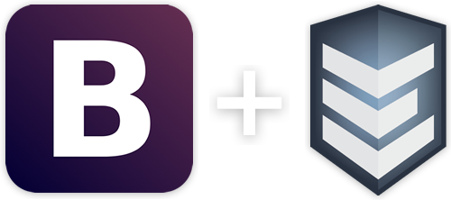
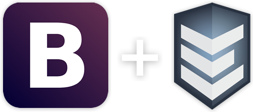

The most popular front-end framework for developing responsive, mobile first projects on the web now combined one of the most powerfull and flexible javascript frameworks for developing mobile experiences, Enyo.

The most popular front-end framework for developing responsive, mobile first projects on the web now combined one of the most powerfull and flexible javascript frameworks for developing mobile experiences, Enyo.
Bootstrap makes front-end web development faster and easier. It's made for folks of all skill levels, devices of all shapes, and projects of all sizes.

Both Enyo and Bootstrap were built on to use LESS. It is like they were meant for each other.

Bootstrap easily and efficiently scales your project with one code base, from phones to tablets to desktops. Enyo leverages this and allows you to easily create native like performance on mobile devices.

With Bootstrap, you get extensive and beautiful documentation with hundreds of live examples, code snippets, and more.
Bootstrap for Enyo is open source. It's hosted, developed, and maintained on GitHub.
View the GitHub project